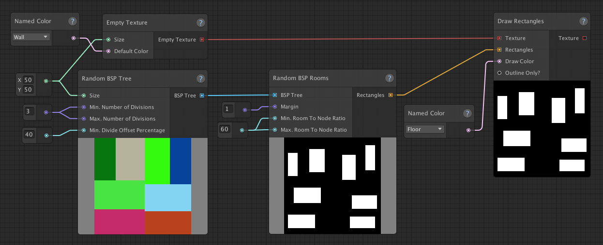
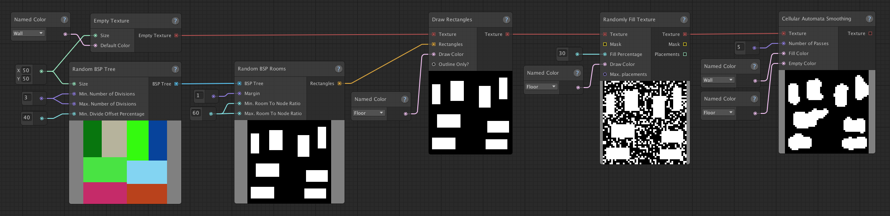
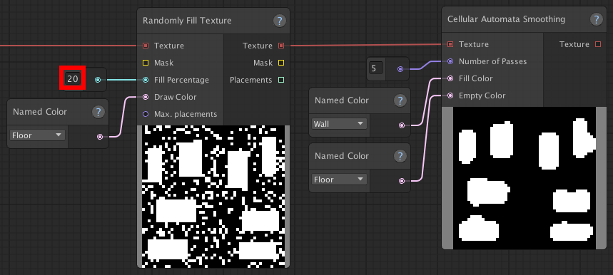
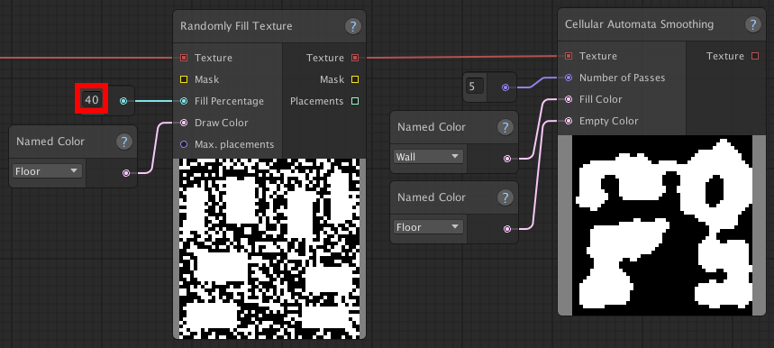
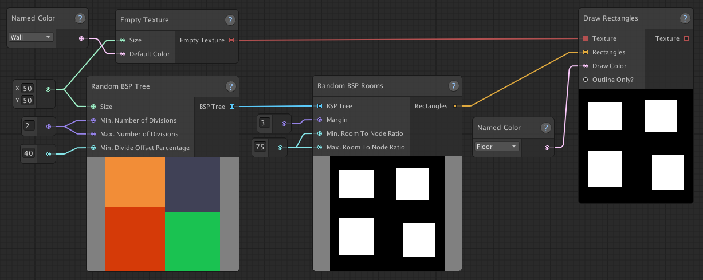
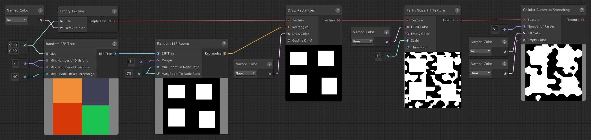
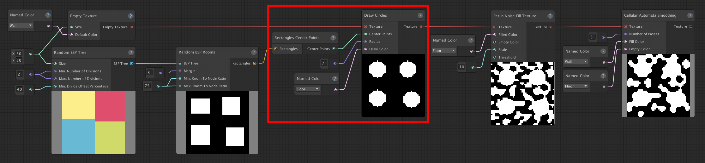

Combining map types
Using the basic techniques to create cave-like or room-based maps is a good starting point, but to really make your map generators your own, you can combine these basic techniques to create your own map types and/or variations.
If you haven't checked out the "Cave-like maps", "Room-based maps" and "Sample-based maps" pages, you might want to do that now, as it will make this page easier to understand.
We'll look at a couple of examples that demonstrate how you can create different results by using a combination of different map types.
Cave-like rooms
Say, we're creating a map for a game that's going to contain some sort of underground dwelling.
Creating a basic room-based map would work, but the rectangles are too perfectly square and doesn't give us the underground vibe we're looking for. A basic cave-like map would give of us that underground vibe, but doesn't give us any rooms to work with. In order to get the best of both worlds, we simply combine these to methods together in a single graph.
First, we start out by creating a basic room-based map, using a random BSP tree (as described on the "Room-based maps" page): 
Secondly, we'll add some noise to the texture using the Randomly Fill Texture node and smooth that out using the Cellular Automata Smoothing node (this is the same method used in the "Creating your first map generator" tutorial.): 
And just like that, now we have some nice looking cave-like rooms!
We can make the rooms more or less cave-like by adjusting the fill percentage:
| Lower Fill Percentage (20) | Higher Fill Percentage (40) |
|  |  |
Cave variation
Cellular automata and Perlin noise are great ways to generate cave-like structures. However, the variations you get from using only these techniques, is limited. By combining them with other techniques, we can create a result that fits our specific use case better.
In this example, we want to create a cave-like level that roughly consists of 4 open areas, evenly distributed over the map. Perlin noise alone won't give us the type of open areas we're looking for and neither Perlin noise and cellular automata allows us to guarantee a certain number of open areas or that they will be evenly distributed.
We'll start out by splitting the space into four chunks, using a random BSP tree: 
We're using the four rooms/rectangles as our basis for the caves, to ensure the even distribution and the open spaces. We can now add some Perlin noise and smooth it out using cellular automata smoothing to create the caves: 
While we're still using the same techniques as before, by connecting them together in this manner we've created a different variation and created some basic "rules" our maps will adhere to.
Next steps
Hopefully, these examples have demonstrated how we're able to combine the basic map types to create our own variations.
This is just the start of what you can do to customize your map generator, though. While the cave-like, room-based and sample-based maps are likely going to be the basis of a lot of your map generation (though not necessarily), there are a lot of other nodes you can use to create more variety with (or different types of maps entirely!).
As a simple example: let's take our Cave Variation example and use circles instead of rectangles, by simply replacing the Draw Rectangles node with a Rectangles Center Points node and a Draw Circles node. Like so: 
This changes the output, in a subtle, but noticeable way. And there are a great many things you can do (subtle, or otherwise) that will change the output of your map generator.
Now might be a good time to take a (or another) look at the sample project and look at the example graphs and how the nodes interact with each other to create all the different kinds of maps that are showcased there!